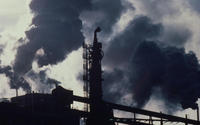

Dans notre vie de tous les jours, nous utilisons plus de 100 000 substances chimiques. La production mondiale de ces produits artificiels est ainsi passée de 1 million de tonnes en 1930 à plus de 400 millions de tonnes aujourd'hui.
D’origine urbaine, agricole et industrielle, ces substances sont le plus souvent invisibles. Elles sont pourtant présentes sur toute la planète jusqu’aux pôles dans les organismes des grands ours blancs ou des peuples Inuits, s’immisçant dans tous les compartiments de notre environnement : sol, eau et air. Elles contaminent ainsi les végétaux et les animaux. Et par l’air que nous respirons, les aliments que nous mangeons et l’eau que nous buvons, nous sommes ainsi tous infectés dès les premiers instants de notre vie dans le ventre maternel.
|  | Or, les recherches scientifiques révèlent de façon de plus en plus explicite les toxicités d’un bon nombre de ces produits chimiques, que ce soit pour l’environnement ou la santé humaine. L’urgence absolue : que les textes réglementaires considèrent enfin l’ensemble du cycle de vie de ces pollutions et qu’ils mettent en place le principe de substitution pour remplacer les produits chimiques les plus préoccupants par des alternatives plus sûres pour notre santé et pour la planète que nous empruntons à nos enfants. Pour la santé de la planète et des hommes, la mission conduit des actions afin de réduire les pollutions chimiques les plus préoccupantes. |
Le WWF participe activement à la mise en place du « Réseau Environnement Santé » qui regroupera ONG de protection de l’environnement, association de médecins, experts et associations de malades.